- OpenStreetMap -
State of the land-use mapping in Belgium
26.10.2017 - FOSS4G.be - Bxl
Julien Minet

This presentation and scripts are available on github.com/nobohan/OSMLanduseAnalyzer.
Why?
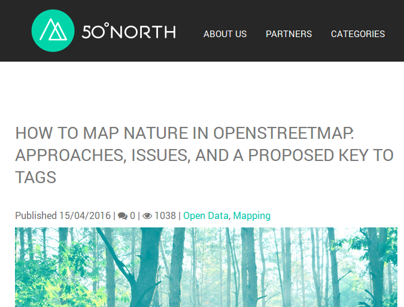 link 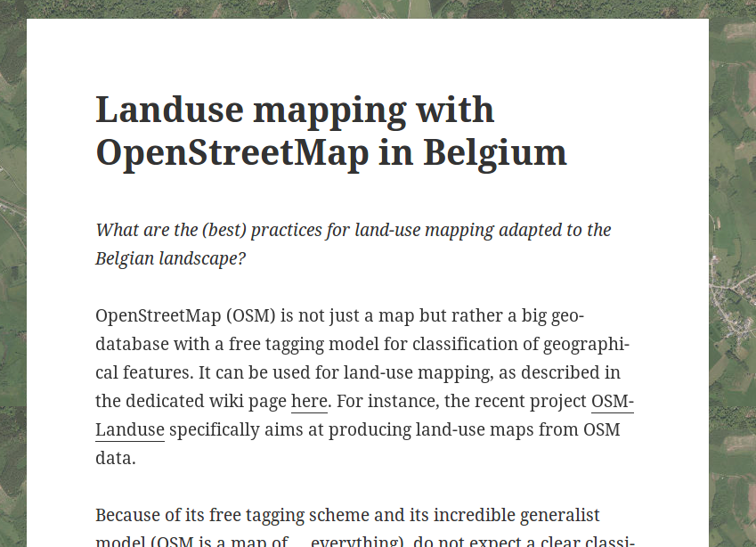 linkObjectives
- 1. Quantitative assessment of land-use/land-cover mapping in OSM in Belgium
- 2. Discuss some cases/issues
- GOAL: Some Belgian conventions on land-use mapping with OSM in Belgium
Quantitative assessment of land-use/land-cover mapping
[Quantitative assessment of land-use/land-cover mapping]
Methodology
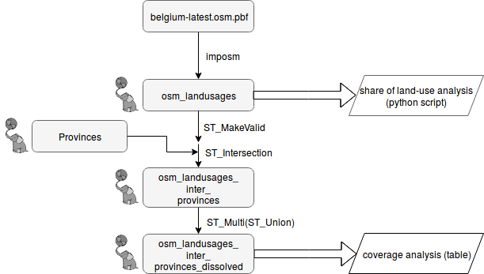OSM data was downloaded from geofabrik on the 10/10/2017.
[Quantitative assessment of land-use/land-cover mapping]
Methodology
Selection of tags (key=value) for "land-use"
Tag list inspired by the "land-use" preset of OSM-Bright
waterway=riverbank;
landuse=basin,reservoir,park,forest,residential,retail,commercial,industrial,railway,cemetery,grass,farmyard,farm,farmland,wood,meadow,village_green,recreation_ground,allotments,quarry,orchard,vineyard,greenhouse_horticulture;
leisure=park,garden,playground,golf_course,sports_centre,pitch,stadium,common,nature_reserve;
natural=wood,land,scrub,wetland,water,heath,grassland;
highway=pedestrian,footway;
amenity=university,school,college,library,fuel,parking,cinema,theatre,place_of_worship,hospital;
place=island;
aeroway=aerodrome,helipad,apron
[Quantitative assessment of land-use/land-cover mapping]
Results
Global share of "land-use" tags in Belgium
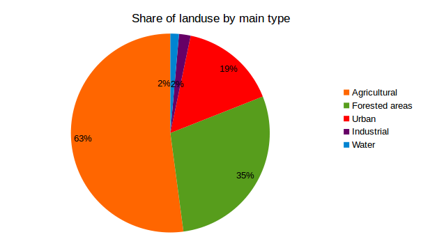Note that many "land-use" polygons superimpose to each other. Sum of classes > 100%!
[Quantitative assessment of land-use/land-cover mapping]
Results
Share of some (not all) land-use class in Belgium in CorineLandCover
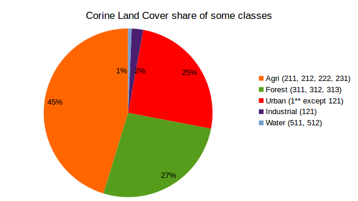[Quantitative assessment of land-use/land-cover mapping]
Results
Share of agricultural "land-use" tags in Belgium
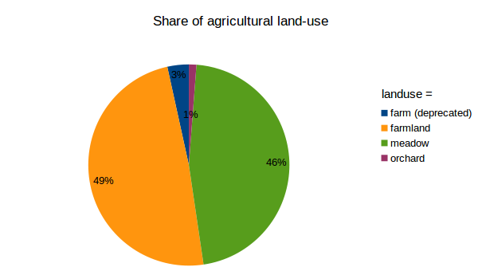[Quantitative assessment of land-use/land-cover mapping]
Results
Part of forested "land-use" that is defined by leaf_type|leaf_cycle in Belgium
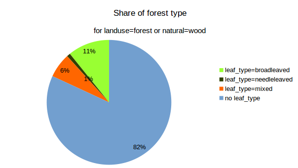The deprecated `wood=*` tags are not considered here.
[Quantitative assessment of land-use/land-cover mapping]
Results
Total coverage of "land-use" tags by provinces in Belgium
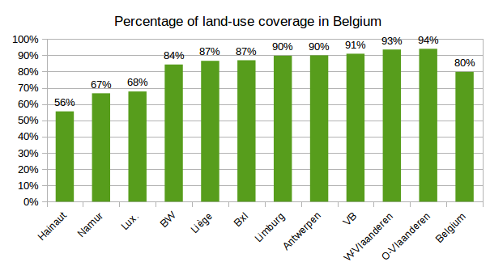OSM land-use mapping issues
[OSM land-use mapping issues]
Should land-use nodes be shared with nodes of adjacent (linear) features?
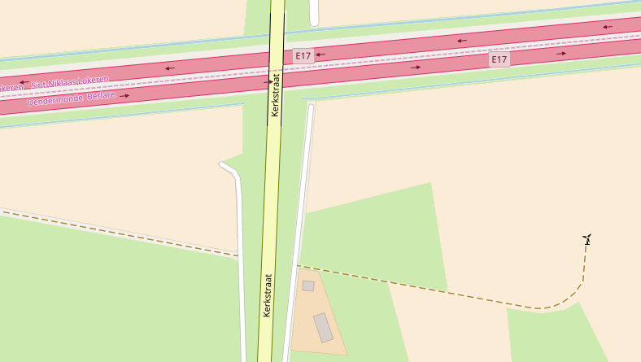See this discussion on the OSM forum
--> We should not
| PROS | CONS |
|---|---|
|
This allow more features to be mapped in the future (hedges, ditches, ...) Geographic features are digitalized with keeping their real ground footprint |
The "OSM land-use" database is not continuous |
[OSM land-use mapping issues]
Should we superimpose "land-use" features?
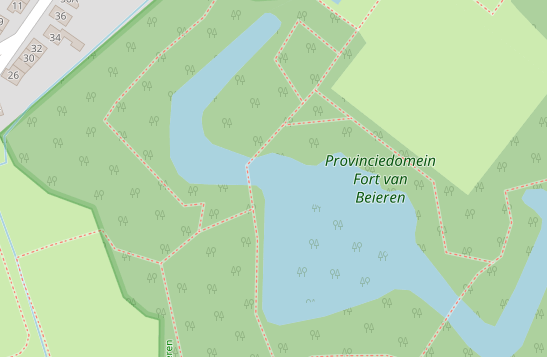See this discussion on the OSM forum.
--> Why not? (it depends)
[OSM land-use mapping issues]
natural=wood vs landuse=forest for mapping forests in Belgium
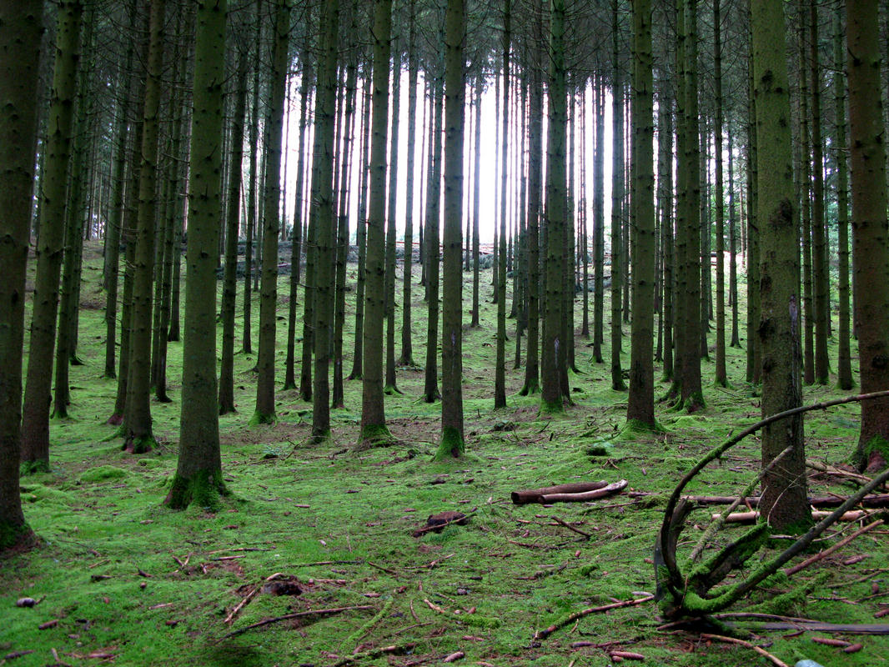
See this discussion on the OSM forum and the Forest wiki page
--> I prefer landuse=forest
[OSM land-use mapping issues]
landuse=farmland vs
landuse=meadow
for mapping meadows in Belgium
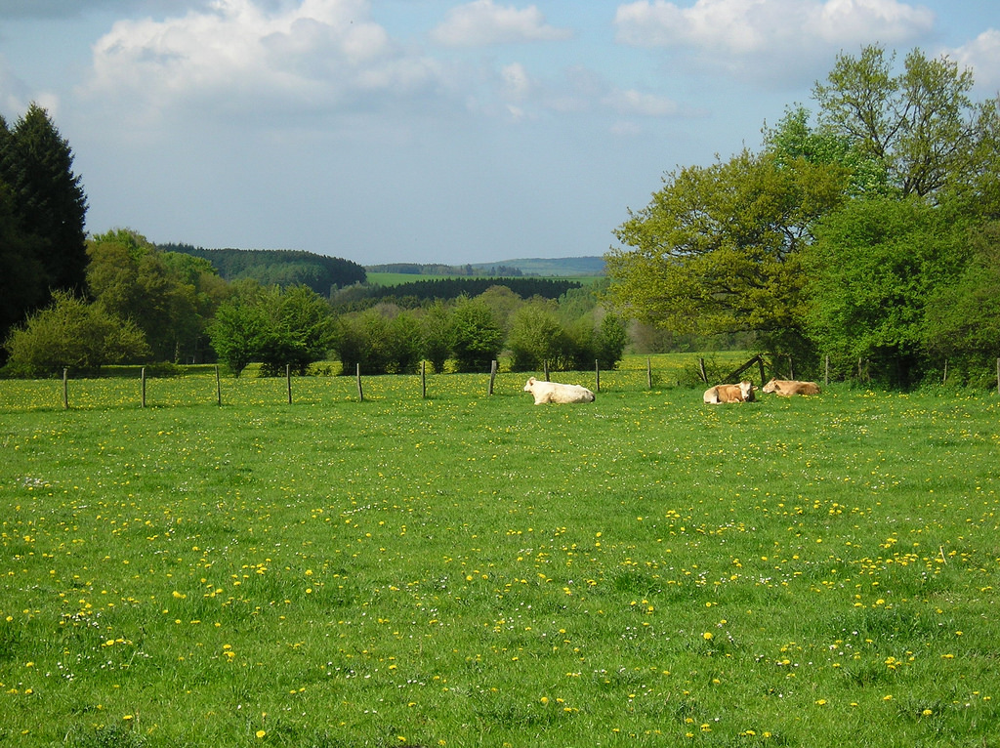
Arable land: landuse=farmland + crop=*
Grazed meadows: landuse=meadow + meadow=agricultural + animal=yes
Hay meadows: landuse=meadow + meadow=agricultural + crop=grass
These tags are often (unappropriately) mixed up!
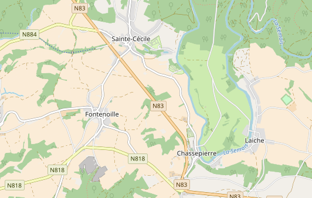[OSM land-use mapping issues]
Better describe leaf_type | leaf_cycle in forests?
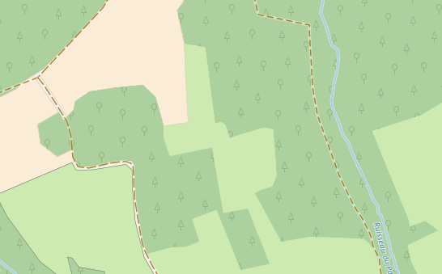Note that forests are rendered by "leaf_type" since the last carto-osm update in August 2017
[OSM land-use mapping issues]
Confusion between land-use & land-cover in OSM
e.g., landuse=grass
landcover=* tags are not rendered
natural=* tags are often pure land-use (and not natural features, at least in Belgium).
Perspectives: OSM as a land-use/land-cover database?
- Use OSM as an auxilliary data for updating land-use/land-cover maps. See the research project landsense.eu. See also osmlanduse.org Collaboration between crowdsourced geodata collection and professional land-use mapping project/agencies would be welcome.
- At the long term, frequently updated information could be used for historical reconstruction of land-use --> In the future, would it be possible to use OSM to study land-use/land-cover changes?
- My opinion: OSM as it is not a land-use/land-cover map and should not become one.
References
Some scientific articles on the issue:
- Production of a land-cover map from OSM and automatic gap-filling with remote sensing data: Schultz et al., Open land cover from OpenStreetMap and remote sensing, International Journal of Applied Earth Observation and Geoinformation, 2017. [link] + the blog article
- Assessment of land-use classification and accuracy in OSM in Vienna, Austria : Arsanjani et al., Toward mapping land-use patterns from volunteered geographic information, International Journal of Geographical Information Science, 2013 [link]
- Comparison of OSM against Corine Land Cover in Portugal : Estima & Painho, Exploratory analysis of OpenStreetMap for land use classification, 2013 [link]
- Accuracy of natural features in OSM (several countries): Winstanley, A study of data representation of natural features in OpenStreetMap, Proceedings of GIScience, 2010 [link]